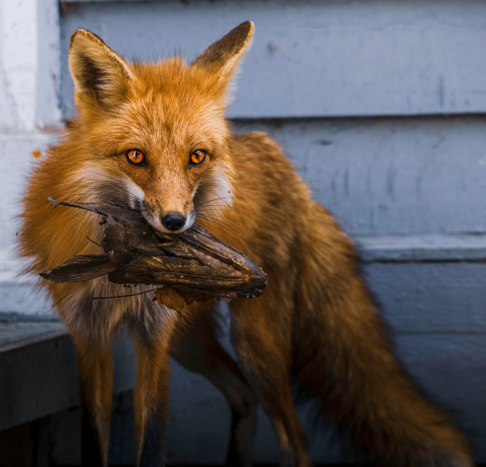
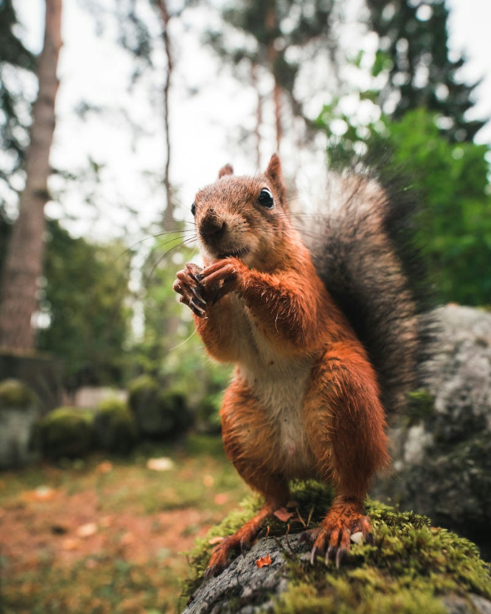
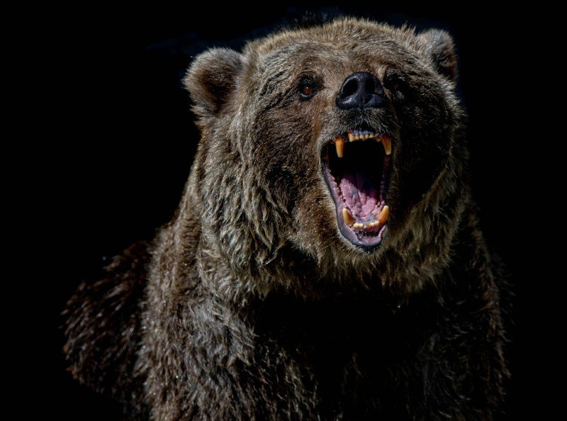
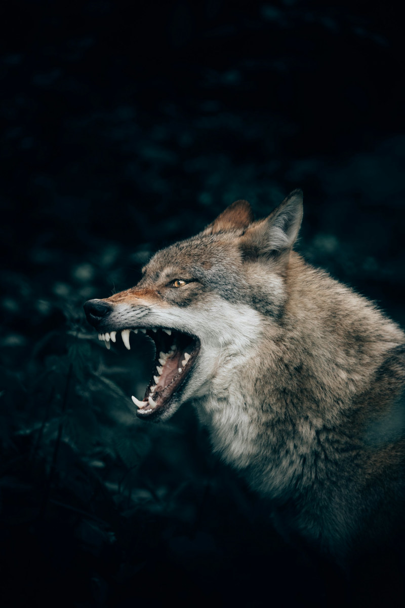
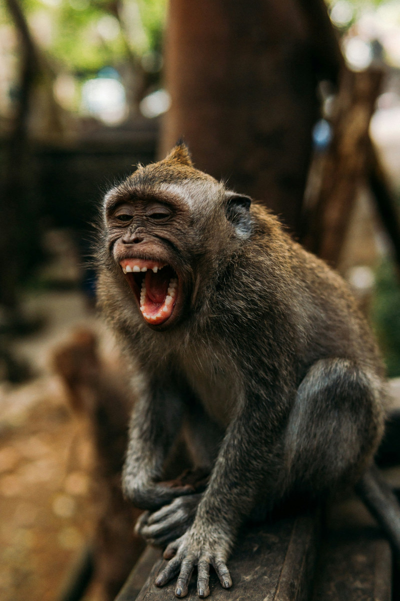
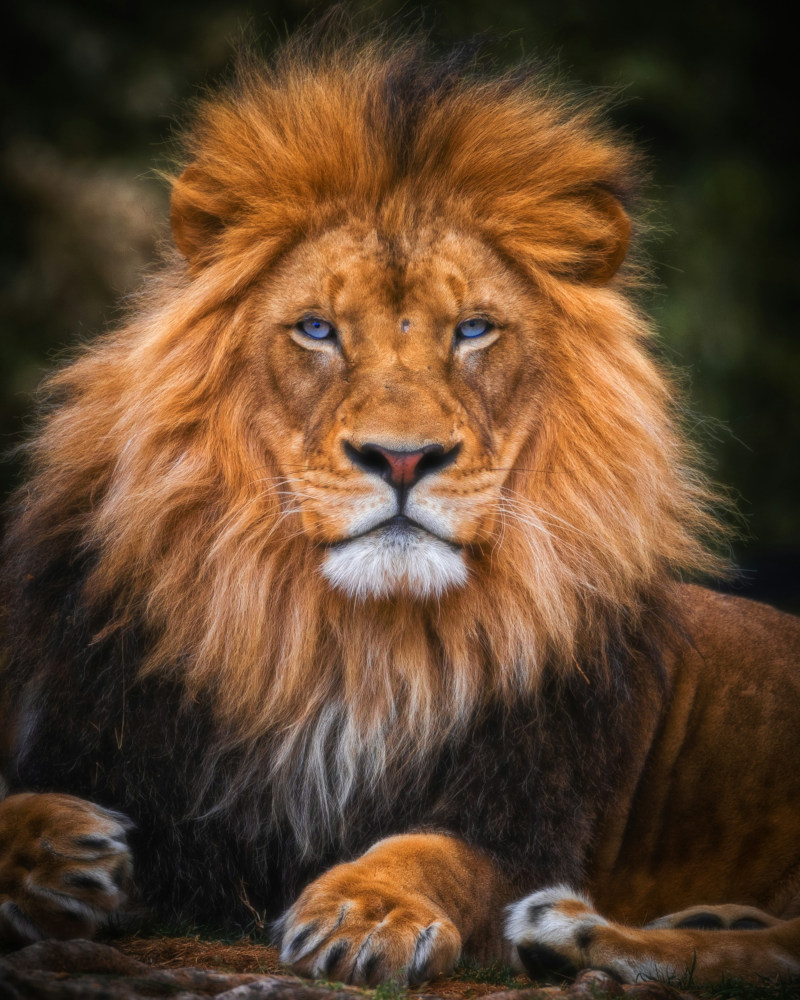

A Raposa é um mamífero carnívoro da família dos canídeos, conhecida por sua inteligência, agilidade e grande capacidade de adaptação.
Possui focinho fino, orelhas pontudas e uma cauda longa e peluda que ajuda no equilíbrio e na comunicação. As raposas podem viver em diversos ambientes, como florestas, campos e até áreas próximas às cidades. Sua alimentação é variada, incluindo pequenos animais, insetos, ovos e frutas. Uma das espécies mais conhecidas é a Raposa-vermelha, encontrada em várias regiões do mundo.
O Esquilo é um pequeno mamífero conhecido por sua agilidade e pela cauda longa e peluda. Vive principalmente em florestas, parques e áreas arborizadas, onde passa grande parte do tempo nas árvores. Alimenta-se de nozes, sementes, frutas e às vezes insetos. Os esquilos também são conhecidos pelo hábito de guardar alimentos para consumir depois, especialmente durante o inverno. Um exemplo conhecido é o Esquilo-vermelho, encontrado em várias regiões da Europa e da Ásia.
O Urso é um grande mamífero conhecido por sua força, tamanho e pelagem espessa. Esses animais podem viver em florestas, montanhas e regiões frias do planeta. A maioria dos ursos é onívora, alimentando-se de frutas, plantas, peixes e pequenos animais. Possuem corpo robusto, patas fortes com garras afiadas e um olfato muito desenvolvido. Uma das espécies mais conhecidas é o Urso-pardo, encontrado em diversas regiões da América do Norte, Europa e Ásia.
O Lobo é um mamífero carnívoro da família dos canídeos, conhecido por sua força, inteligência e organização social. Os lobos vivem em alcateias, grupos organizados que caçam e se protegem juntos. Possuem corpo forte, pelagem densa, orelhas pontudas e um olfato muito apurado. Alimentam-se principalmente de outros animais, como cervos e pequenos mamíferos. A espécie mais conhecida é o Lobo‑cinzento, encontrado em diversas regiões da América do Norte, Europa e Ásia.
O Macaco é um mamífero conhecido por sua inteligência, agilidade e comportamento social. Os macacos vivem principalmente em florestas tropicais e costumam passar grande parte do tempo nas árvores. Alimentam-se de frutas, folhas, sementes, insetos e pequenos animais. Possuem mãos e pés adaptados para segurar galhos, o que facilita sua locomoção entre as árvores. Um exemplo conhecido é o Macaco-prego, comum em várias regiões da América do Sul.
O Leão é um grande mamífero carnívoro conhecido como o “rei da selva”. Ele vive principalmente nas savanas da África e é famoso por sua força, coragem e pelo rugido poderoso. Os leões vivem em grupos chamados de alcateias ou bandos, onde caçam e se protegem juntos. Alimentam-se principalmente de outros animais, como zebras e antílopes. Os machos possuem uma grande juba ao redor da cabeça, característica que os diferencia das fêmeas.